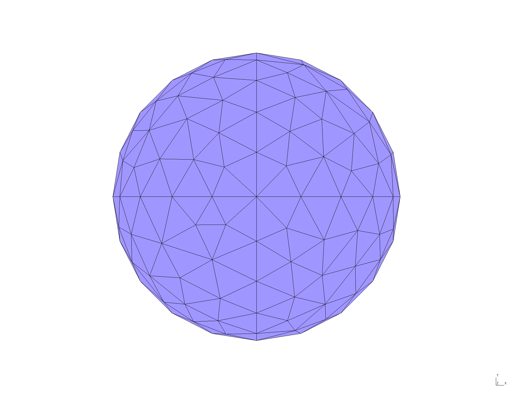

First calculations with SCUFF-EM and BUFF-EM: Mie Scattering
To get an initial flavor of the typical flow of calculations in scuff-em and buff-em, calculation, let's first use these tools to solve the textbook problem of Mie scattering, the scattering of a plane wave by a homogeneous dielectric sphere.
As shown in the figure, we will take the sphere to have radius 1 m and the incident field to be a linearly-polarized plane wave traveling in the positive direction with magnitude and wavevector
Exact solution
For this problem, the full scattered fields may be expressed exactly as a sum of vector spherical waves; the full treatment may be found in this memo or any electromagnetism textbook. Here we will two aspects of this solution.
Field components in the electrostatic limit
In the low-frequency limit , the problem reduces to the textbook electrostatics problem of a dielectric cylinder placed in a constant external field (see, for example, Jackson Chapter 4). The total electric field inside and outside the sphere reads:w where is the (relative) DC permittivity of the sphere.
The sphere acquires an electric dipole moment of strength and the scattered field outside the sphere is just the electrostatic field of this dipole.
Below we will consider the particular values , in which case the theoretical treatment given above makes two simple numerical predictions that we can use to test the accuracy of our numerical solvers:
-
The -component of the -field inside the sphere is constant and equal to
-
The -component of the induced dipole moment is
(In this last calculation I have rewritten the permittivity of free space in terms of the vacuum speed of light and the vacuum wave impedance, , then used the values and in default scuff-em units.)
Power, force, and torque (PFT) versus frequency
Moving out of the low-frequency limit, the textbook theory of Mie scattering makes the following predictions for the total power scattered by the sphere: where is the impedance of vacuum and the coefficients are dimensionless numbers defined by certain ratios of Bessel functions; explicit expressions are given, for example, in Bohren & Huffman, who also give similar series expressions for the absorbed power and force (radiation pressure).
Solution in SCUFF-EM
All input files referenced below may be found
in the MieScattering subdirectory of the
SCUFFTutorial archive..
gmsh geometry and mesh files (.geo and .msh files)
The first step is to define a triangulated mesh
representation of the sphere's surface, a task
for which we use the wonderful open-source
program gmsh.
The directory MieScattering/geoFiles
contains a gmsh input
file called
Sphere.geo, which we turn into a
surface mesh like this:
mylaptop% gmsh -2 Sphere.geoThis produces the file Sphere.msh, which you can open in
gmsh to see what it looks like:

scuff-em geometry files (.scuffgeo files)
Scattering geometries in scuff-em are described
by simple text files conventionally given file extension .scuffgeo.
(For reference, here's the section of the scuff-em
documentation discussing .scuffgeo files.)
We will create two .scuffgeo files, describing spheres
of the same size but consisting of different materials:
- For low-frequency calculations, we will consider a dielectric
sphere of (frequency-independent) relative permittivity .
The
.scuffgeofile for this case is calledE10Sphere.scuffgeo:
E10Sphere.scuffgeo OBJECT Sphere
MESHFILE Sphere_501.msh
MATERIAL CONST_EPS_10
ENDOBJECT- For PFT calculations, we will consider a gold sphere, with relative permittivity described by the function
The .scuffgeo file for this case looks like this:
GoldSphere.scuffgeo MATERIAL GOLD
wp = 1.37e16;
gamma = 5.32e13;
Eps(w) = 1 - wp^2 / (w * (w + i*gamma));
ENDMATERIAL
OBJECT Sphere
MESHFILE Sphere_501.msh
MATERIAL GOLD
ENDOBJECTFile specifying field evaluation points (EPFile)
For calculating field components in the electrostatic
case, we need to specify the Cartesian coordinates of
our desired evaluation points. For this purpose we
write a little text file called EPFile.XAxis describing
evenly-spaced points lying on the -axis in the range
:
EPFile.XAxis -3.0 0.0 0.0
-2.9 0.0 0.0
...
2.9 0.0 0.0
3.0 0.0 0.0File specifying frequencies for PFT calculation (OmegaFile)
Finally, we need to specify the angular frequencies at which
we will compute power, force, and torque (PFT). For this purpose
we write a little text file called simply OmegaFile,
which in this case contains logarithmically-spaced points
in the range ,
where the default frequency unit is
OmegaFile 0.10000000
0.12589254
...
7.94328235
10.00000000Note that the numerical values of here coincide with numerical values of the dimensionless Mie size parameter .
Calculation of electrostatic fields
Now it's time to run scuff-scatter with command-line options specifying the geometry, the incident field, and the desired outputs.
Because there are several options to specify,
it can get a little unwieldy to type everything
on the command line. In cases like this, it is
convenient to write a little shell script in a
text editor. For our calculation of electrostatic
fields on the -axis,
we'll call this script RunScript.XAxis:
RunScript.XAxis:#!/bin/bash
BASEDIR=${HOME}/SCUFFTutorial/MieScattering
export SCUFF_MESH_PATH=${BASEDIR}/mshFiles
export SCUFF_GEO_PATH=${BASEDIR}/scuffgeoFiles
ARGS=""
ARGS="${ARGS} --geometry E10Sphere_501.scuffgeo"
ARGS="${ARGS} --Omega 0.1"
ARGS="${ARGS} --PWDirection 0 0 1"
ARGS="${ARGS} --PWPolarization 1 0 0"
ARGS="${ARGS} --EPFile EPFile.XAxis"
ARGS="${ARGS} --MomentFile E10Sphere_501.moments"
scuff-scatter ${ARGS}(The first few lines of this script just set up some convenient file search paths. The actual scuff-scatter command-line options are pretty self-explanatory; for details, consult the the scuff-scatter command-line option reference.
Now just execute this script at the command prompt.
(The first line below just changes the file permissions
of the text file RunScript.XAxis to allow it to be
executed as a program).
% chmod 755 RunScript.XAxis
% RunScript.XAxis
Thank you for your support.
%This calculation, which takes 9 seconds on my laptop, produces the following output files:
-
E10Sphere_501.moments(induced dipole moments) -
E10Sphere_501.EPFile.XAxis.total(components of total fields) -
E10Sphere_501.EPFile.XAxis.scattered(components of scattered fields)
These are text files containing lines of numbers
with header info at the top of the file explaining how to
interpret. For example, the .moments file looks like
this:
E10Sphere_501.moments# data file columns:
# 1 angular frequency (3e14 rad/sec)
# 2 surface label
# 03,04 real,imag px (electric dipole moment)
# 05,06 real,imag py
# 07,08 real,imag pz
# 09,10 real,imag mx (magnetic dipole moment)
# 11,12 real,imag my
# 13,14 real,imag mz
#
0.1 Sphere 2.43029353e-02 1.29331270e-05 -2.68984543e-05 5.49622097e-07 2.58971375e-06 1.60193412e-07 1.10209973e-07 -3.46602175e-09 1.05593764e-04 -9.50837519e-07 -1.98838334e-08 -7.19777997e-07 Next, let's use gnuplot
to plot the x component of the total field as
reported in the file E10Sphere_501.EPFile.XAxis.total:
gnuplot> plot 'E10SPhere_501.EPFile.XAxis.total' u 1:5 w lp pt 7 ps 1, 0.25Calculation in BUFF-EM
We can also run the same calculation in buff-em.
The main difference is that we have to produce a volume mesh
instead of a surface mesh, which basically just involves
running gmsh -3 instead of gmsh -2 and produces a meshfile
called Sphere_677.msh instead of Sphere_501.msh (corresponding
to 677 interior tetrahedron faces instead of 501 interior triangle
edges). To avoid confusion I always rename the .msh files
produced by gmsh for volume meshes to have file extension
.vmsh, so the vmshFiles subdirectory of SCUFFTutorial/MieScattering
contains a 3D volume mesh called Sphere_677.vmsh
and the corresponding buff-em
input file is buffgeoFiles/E10Sphere_677.buffgeo.
Here's the run script for the buff-em calculation:
RunScript.buffEM#!/bin/bash
BASEDIR=${HOME}/SCUFFTutorial/MieScattering
export BUFF_MESH_PATH=${BASEDIR}/vmshFiles
ARGS=""
ARGS="${ARGS} --geometry buffgeoFiles/E10Sphere_677.buffgeo"
ARGS="${ARGS} --Omega 0.1"
ARGS="${ARGS} --PWDirection 0 0 1"
ARGS="${ARGS} --PWPolarization 1 0 0"
ARGS="${ARGS} --EPFile EPFile.XAxis"
ARGS="${ARGS} --MomentFile E10Sphere_677.moments"
buff-scatter ${ARGS}